CASE FILE 06 · HAWSR · ARCHITECTURE → SOFTWARE
Team of 6 · about $60K revenue · later closedMy master's thesis became a real company.
Browse the whole build (15 screens) ↘
§1 CONTEXT
Most theses become PDFs. I tried to turn mine into a business.
I worked as an architect for nine years, including reconstruction work with UNOPS in Anbar. After teaching myself to code, my thesis automated the delivery of Revit building models to the web. I turned that idea into HAWSR.
The company did not last, but it gave me my first serious product, customers, revenue and a team of six to lead. It was the point where software became my career.
§2 THE CONSTRAINTS
- BIM models are huge. They needed heavy optimisation before they could load on a normal laptop.
- The Revit to web step had to be automated. Manual export did not scale.
- Iraqi construction clients had never bought software like this. Every sale started with explaining that the category existed.
- Funding was limited, so revenue had to carry the company.
- I was learning engineering, sales and product at the same time while paying clients watched.
§3 MY OWNERSHIP
- I built the Three.js and React platform for exploring building models in a browser.
- I automated the Revit to web pipeline with Dynamo and Python.
- I researched converting 360° captures into Gaussian Splatting scenes.
- I won first prize at The Station Foundation incubator.
- I presented the product to an audience of more than 1,000 people.
- I sold and delivered about $60K of work.
- I built and led a team of six while learning product, sales and engineering.
§4 SYSTEM MAP
REVIT MODEL
│
▼
DYNAMO + PYTHON automation (no manual export · the pipeline runs itself)
│
▼
optimized geometry (BIM-scale models, browser-scale payloads)
│
▼
THREE.JS / R3F WEB VIEWER
│
▼
client browser (no install · no plugin · a link)
R&D LANE (experimental)
360° CAPTURE ──▶ processing (Insta360 SDK) ──▶ GAUSSIAN SPLATTING scene
§5 KEY DECISIONS
I wanted customers to test the idea, not just a committee. Building the product gave me much better answers.
The viewer was the demo. The useful part was the Revit to web automation that saved people from doing exports by hand.
About $60K of revenue proved that some clients would pay. It did not prove the market was big enough.
The market was small, funding was gone and the splat quality was not ready. I chose to shut the company down instead of keeping it half alive.
§6 OUTCOME
HAWSR taught me Three.js, React Three Fiber, automation and product thinking. I still use those skills today, including on this website.
§7 HOW THE RUN ENDED
The market was too small. There were construction firms willing to pay, but not enough to grow the company. Funding was gone. Gaussian splatting from 360° capture was also not good enough yet to sell as a product.
Together, those problems were the answer. I handed off the clients, archived the pipeline and shut HAWSR down.
HAWSR did not become the company I wanted. It did turn automation into my software career.
§8 THE WHOLE BUILD
A landing page that opens into a spatial product.
Explore each part individually. These are original interfaces from the project itself; capture context is noted below.
CLICK TO EXPLORE ↗
Introduce the experience
Actual pages from the HAWSR landing source, captured from its static export. This collection documents the landing code; the archived case remains marked closed.

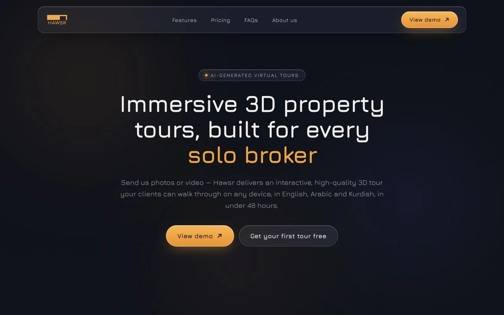
The landing project’s original hero, captured from its local static export.

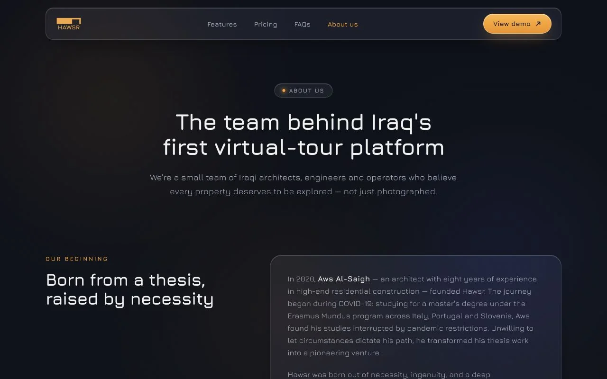
The original about page tells the platform’s origin and team story.

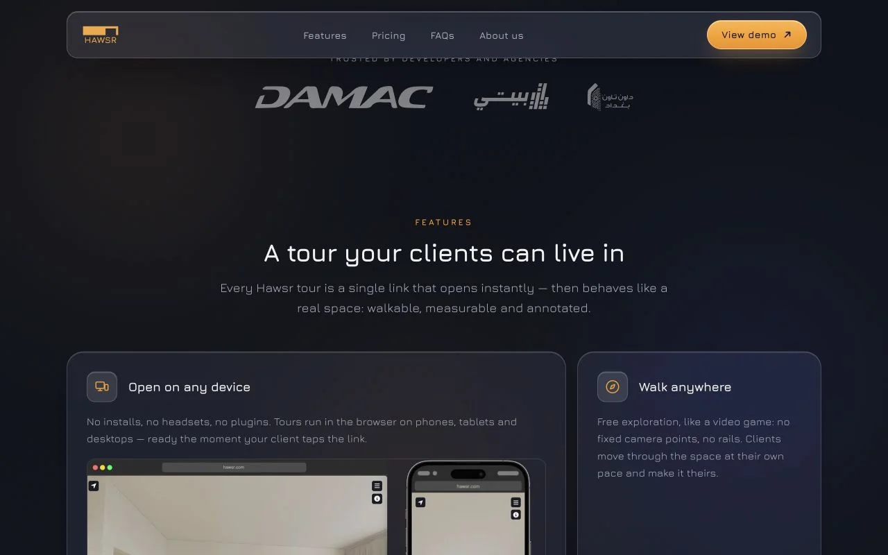
The feature section presents the tour and device experience before the viewer.
Inside the model viewer
12 archived feature screenshots and original viewer/model images from the spatial product.

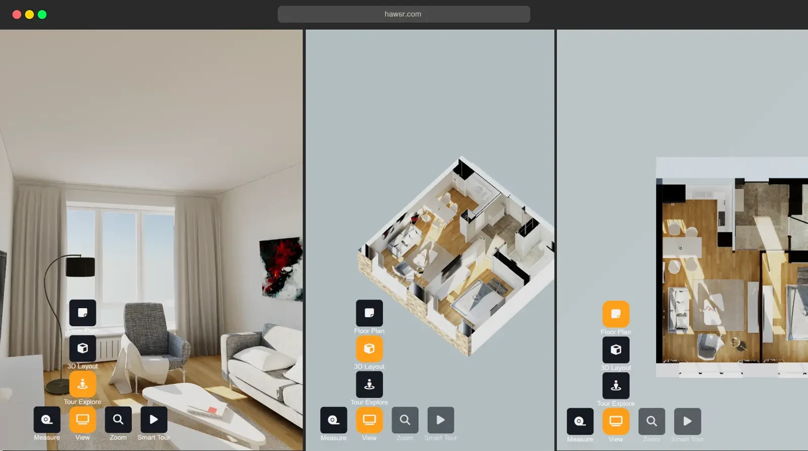
The archived viewer shows a model from multiple useful perspectives.

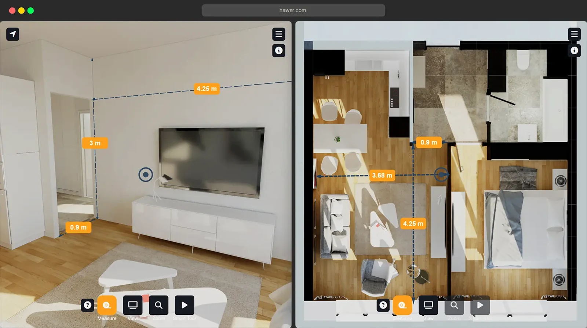
Measurement tools connect the visual model to practical questions.

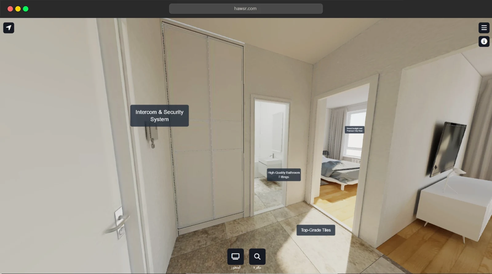
Annotations anchor a discussion to a place in the scene.

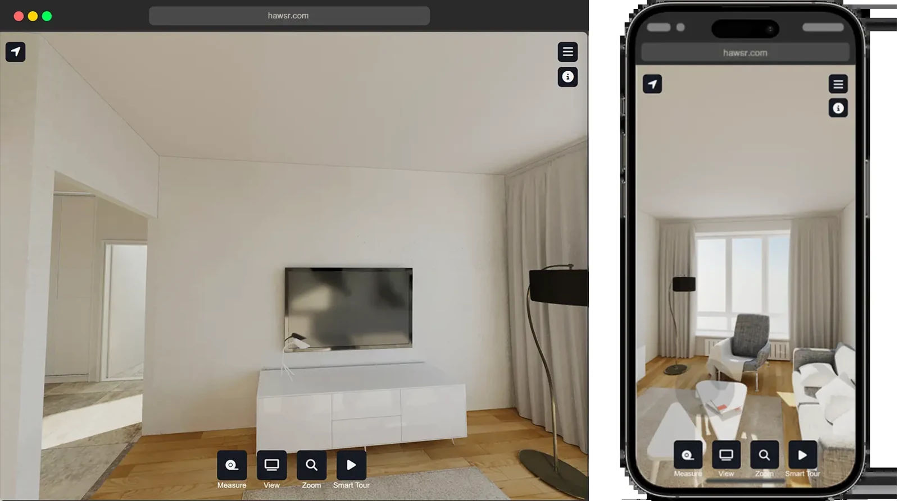
The archived interface demonstrates the viewer on different screen sizes.

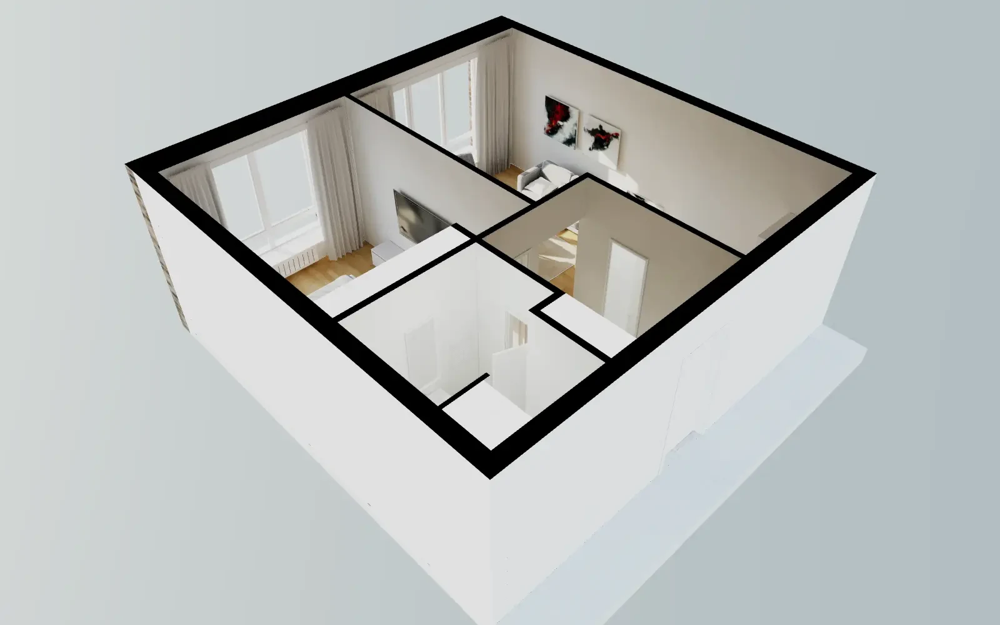
The dollhouse view exposes the relationship between rooms.

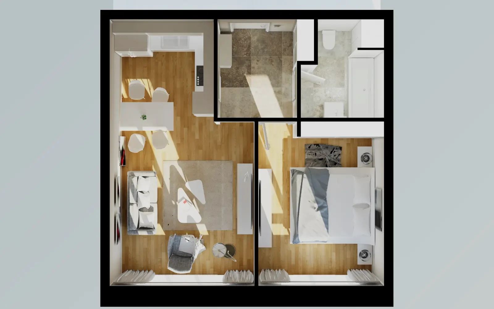
The plan view gives the model a familiar architectural frame.

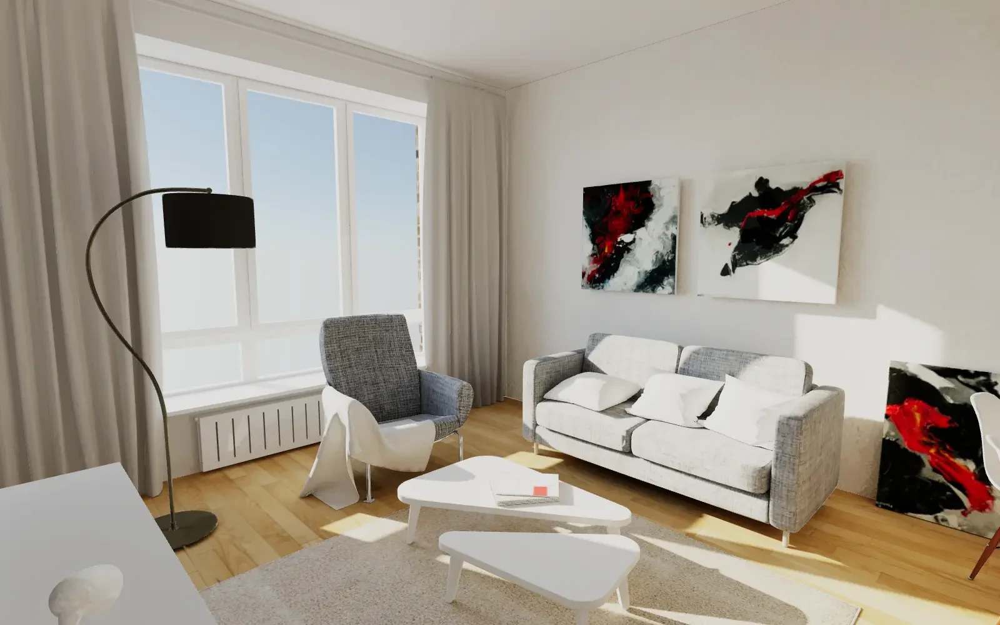
An archived model view shows the room from eye level.

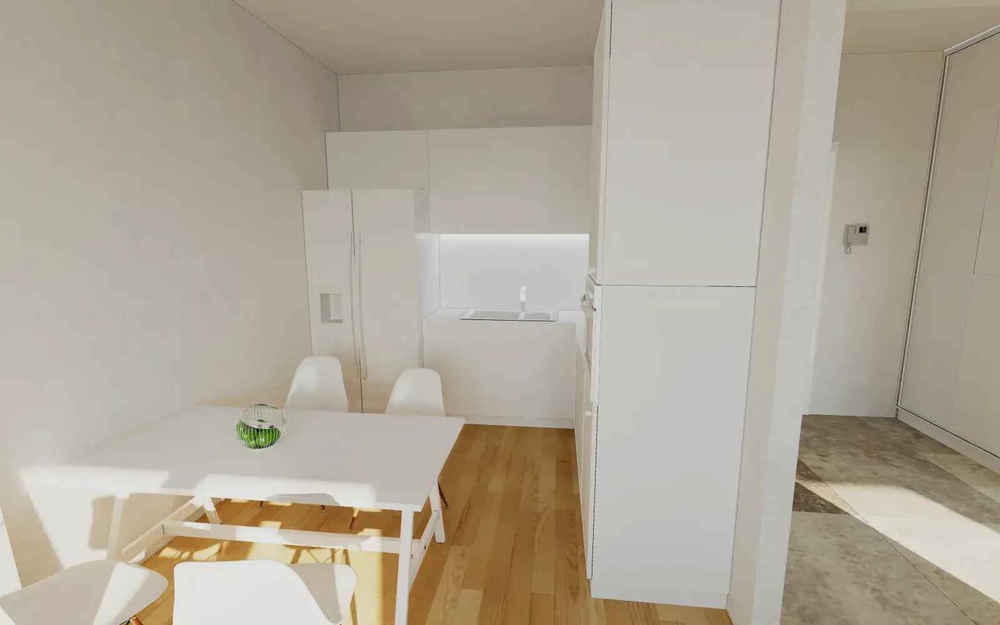
A different room tests how the same viewer communicates interior layout.

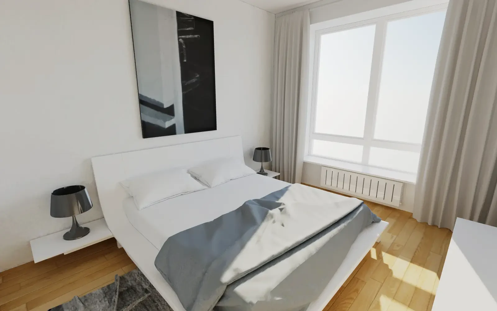
The bedroom view preserves the spatial experience across rooms.

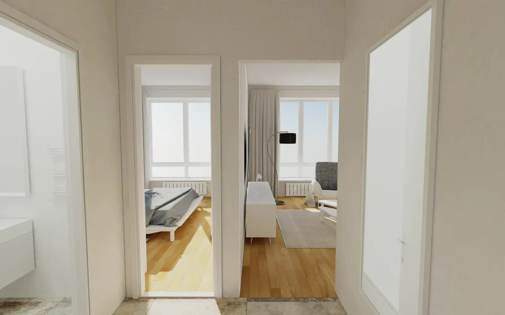
The hall view shows circulation and connections.

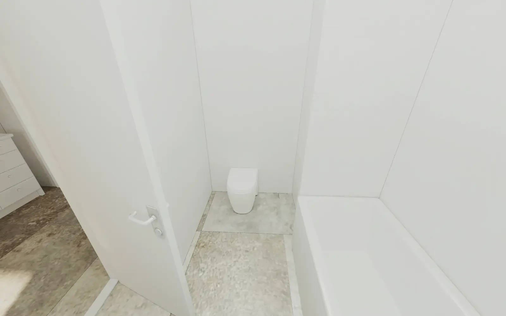
The same browser model includes detailed interior views.

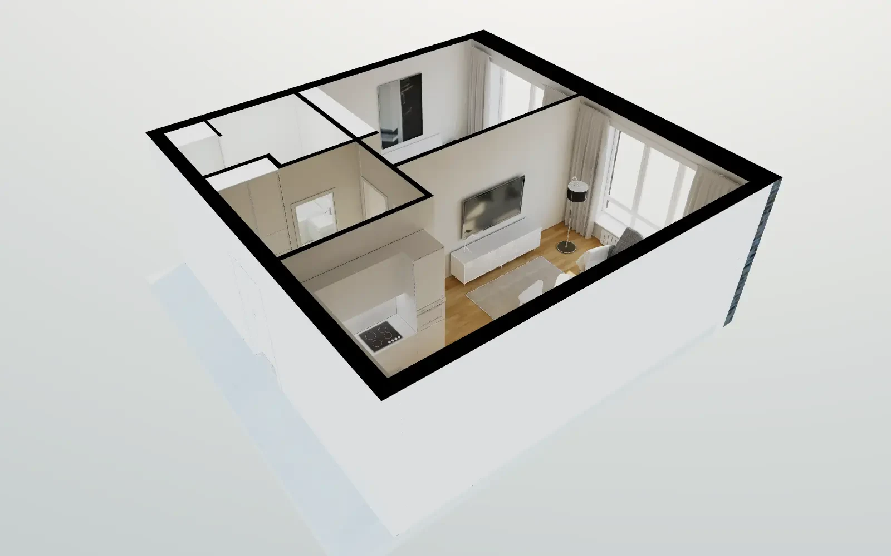
A second model angle reveals a different arrangement of the spaces.
§9 WHAT I LEARNED
Technical feasibility, product, and market size are three different questions. I learned to ask all three before writing code.
§10 WHAT I'D CHANGE TODAY
I would validate the market size before building the full platform. I would sell the automation as a service first and let revenue prove the pipeline. I would also keep splatting as research until the quality was ready.